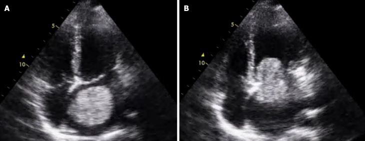
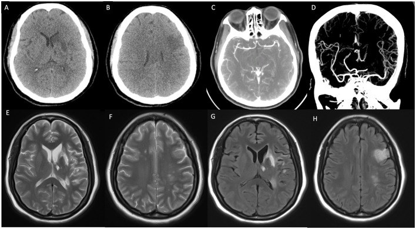
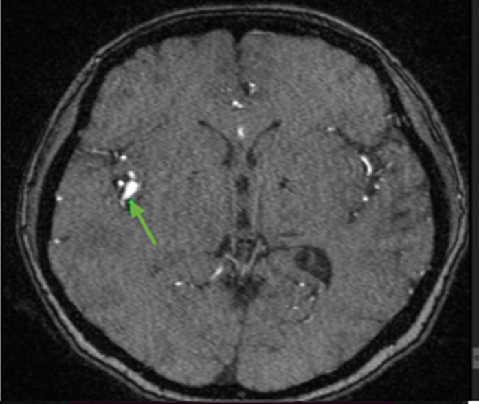

3093 — Nhồi máu não do u nhầy tim: nhiều ổ, túi phình myxoma & khi nào mổ tim / Cardiac myxoma stroke
Tags: pattern:nhoi-mau-nao pattern:nhieu-o pattern:khong-dong-nhat vung:nao vung:tim score:TOAST protocol:MRI-DWI protocol:TEE protocol:CTA-mach-nao incidentaloma:khong
Mức chắc chắn (certainty): tổng hợp y văn (literature synthesis) — 1 tổng quan cơ chế/điều trị (World J Cardiol 2025, PMC12754060, CC BY-NC), 1 đoàn hệ 52 bệnh nhân u nhầy tim (13 ca biến cố mạch máu não) (Front Neurol 2018, PMC6178925, CC BY), 2 phân tích gộp về tiêu sợi huyết và lấy huyết khối (PMC9133336 và PMC9058073, CC BY), 1 loạt 41 ca (PMC5818936, CC BY) và 4 ca nguyên văn có ảnh (PMC13637264 CC BY; PMC11693650 CC BY; PMC12948571 CC BY-NC-ND; PMC12754060 CC BY-NC). Nhóm không có bệnh nhân của mình; chỗ nguồn lệch nhau (tỉ lệ thuyên tắc, thời điểm mổ) được ghi rõ là mâu thuẫn nguồn.
Câu chốt: u nhầy tim (cardiac myxoma, CM) là nguồn thuyên tắc tim phải được nghĩ tới ở người trẻ đột quỵ không có yếu tố nguy cơ, đặc biệt khi nhiều ổ ở nhiều lãnh thổ. Ba số phải thuộc: (1) thuyên tắc gặp ở 20–45% bệnh nhân CM, và ~50% biến cố thuyên tắc rơi vào não (PMC12754060); (2) trong đoàn hệ 52 ca, 13 ca (25%) có biến cố mạch máu não, 46% xảy ra dù đang dùng kháng kết tập/kháng đông, và 23% tái phát trong lúc chờ mổ — khoảng cách từ biến cố đến mổ càng dài, tái phát càng nhiều (p = 0,021) (PMC6178925); (3) lấy huyết khối cơ học đạt tái thông 91,8%, kết cục tốt 3 tháng 60,0%, tử vong 8,6% (35 ca/51 mạch) (PMC9058073). Nghĩa là: TEE tìm khối nhĩ trái → mổ tim sớm, không thay bằng kháng đông; đừng bỏ sót túi phình myxoma xuất hiện muộn.
1. Tổng quan bệnh học – cơ chế hình ảnh
1.1 Vì sao u nhầy tim gây đột quỵ — hai cơ chế, hai hình ảnh
- Dịch tễ: CM là u tim nguyên phát thường gặp nhất, chiếm 50–85% u tim lành tính (PMC12754060), và 75–90% nằm ở nhĩ trái, thường có cuống bám vào hố bầu dục (fossa ovalis). Vì nằm trong buồng tim trái và di động theo nhịp, u dễ bị bóp/nghiền giữa van hai lá và thành nhĩ.
- Cơ chế 1 — thuyên tắc mảnh u (tumor embolism): mảnh mô nhầy bong ra, trôi theo động mạch cảnh → tắc mạch lớn, có thể xâm nhập thành mạch gây túi phình myxoma về sau. Mô học mảnh thuyên tắc: chất nền nhầy, tế bào hình sao/thoi rải rác, không phải fibrin (PMC13637264, Fig. 3C–E).
- Cơ chế 2 — huyết khối trên bề mặt u (thromboembolism): bề mặt u là nơi dòng chảy xoáy + tổn thương nội mạc → cục fibrin–tiểu cầu hình thành, bong ra thành nhiều mảnh nhỏ. Mô học mảnh thuyên tắc: fibrin, không có tế bào u.
- TẠI SAO "nhiều ổ nhiều lãnh thổ": một ổ nhồi máu đơn lẻ do một mạch; nhiều ổ ở hai bán cầu/hai hệ tuần hoàn chỉ có thể do nguồn thuyên tắc trung tâm rải rác — tim (CM, NBTE, viêm nội tâm mạc) hoặc quai ĐMC. Vì vậy "nhiều ổ" là dấu hiệu định hướng nguồn tim, không phải đặc điểm của xơ vữa.
- TẠI SAO DWI sáng / ADC thấp: thiếu máu cấp → bơm Na⁺/K⁺-ATPase thất bại → phù độc tế bào → nước vào nội bào → khuếch tán bị hạn chế. DWI dương < 4,5 giờ, trước khi FLAIR đổi tín hiệu; vì vậy DWI là bản đồ lãnh thổ, giúp đếm ổ và phân biệt một ổ lớn với nhiều ổ rải rác.
- TẠI SAO u nhầy sáng trên T2: mô u giàu chất nền nhầy (glycosaminoglycan) chứa nhiều nước → T2 tăng tín hiệu mạnh, T1 đồng tín hiệu cơ, ngấm thuốc không đồng nhất (mô u sống ngấm, vùng nhầy/xuất huyết/vôi hóa không ngấm). Đây là lý do MRI tim phân biệt u nhầy với huyết khối (huyết khối T2 tối, không ngấm).
1.2 Cơ chế túi phình myxoma — biến chứng muộn, dễ bỏ sót
- Tế bào u nhầy theo mảnh thuyên tắc xâm nhập thành động mạch não, phá màng đàn hồi trong (internal elastic lamina) và lớp cơ → thành mạch yếu dần → giãn fusiform, có thể vỡ hoặc huyết khối tại chỗ. Thời gian từ đột quỵ đến phát hiện phình thường nhiều tháng đến nhiều năm.
- Số liệu: một tổng quan hệ thống (dẫn trong JACC Case Reports 2026) chỉ đếm được 54 ca phình não do myxoma — tức rất hiếm nhưng không được bỏ qua (PMC12948571). Vị trí hay gặp: nhánh động mạch não giữa (MCA) và vùng tưới máu của ổ nhồi máu cũ; phình fusiform, nhiều ổ, không có cổ rõ.
- Ca nguyên văn: nữ 54 tuổi, nhiều cơn đột quỵ tái diễn, phát hiện nhiều túi phình fusiform ở MCA hai bên và A3 phải; 9 tháng sau mổ, túi ở đoạn insular gần MCA trái tăng từ 0,8 × 0,8 cm lên 2,3 × 0,7 cm — cho thấy phình myxoma có thể lớn dần sau khi đã lấy u (PMC12948571). Ca khác: 15 tháng sau mổ xuất hiện nhiều ổ di căn não, 23 tháng thấy giãn phình M1–M2 kèm xuất huyết (PMC11693650).
- Hệ quả thực hành: sau khi lấy u nhầy, không được dừng theo dõi hình ảnh não; phình myxoma có thể xuất hiện sau khi tim đã sạch u.
1.3 Vì sao kháng đông không thay được mổ — số liệu
- Trong 52 bệnh nhân CM, 13 ca (25%) có biến cố mạch máu não; 46% biến cố xảy ra khi đang dùng kháng kết tập tiểu cầu hoặc kháng đông, và 23% tái phát trong giai đoạn "bắc cầu" chờ mổ (PMC6178925). Đây là bằng chứng trực tiếp rằng kháng đông không bảo vệ được khỏi mảnh u.
- Khoảng cách biến cố → mổ càng dài, tái phát càng nhiều (p = 0,021) — lý do phải mổ sớm khi an toàn, không "chờ ổn định rồi tính".
- Tiêu sợi huyết (IVT): phân tích gộp 47 ca CM-AIS — xuất huyết chuyển dạng 23,4% (có triệu chứng 8,5%), kết cục tốt 3 tháng 61,7%, tử vong 4,3% (PMC9133336). IVT không bị cấm, nhưng phải cân nhắc nguy cơ chảy máu và chuẩn bị lấy huyết khối.
- Lấy huyết khối cơ học (MT): 35 ca/51 mạch — tái thông 91,8%, kết cục tốt 60,0%, tử vong 8,6%; mảnh lấy ra ở 5 ca được xác định là mô u nhầy (PMC9058073). MT vừa tái thông vừa lấy được bệnh phẩm để chẩn đoán.
2. Mẫu hình + chẩn đoán phân biệt theo vị trí (gamut)
- Theo số ổ: một ổ lớn (tắc mạch lớn — CM, xơ vữa, bóc tách) vs nhiều ổ nhiều lãnh thổ (CM, NBTE, viêm nội tâm mạc, rung nhĩ, PFO, xơ vữa quai ĐMC) vs nhiều ổ nhỏ rải rác kiểu "hoa anh đào" (viêm mạch, huyết khối vi mạch).
- Theo vị trí: vùng MCA (hay gặp nhất, dễ gây liệt nửa người/thất ngôn); hệ sống–nền (chóng mặt, nhìn đôi, hội chứng tiểu não — ca basilar occlusion trong PMC13637264); nhiều lãnh thổ hai bán cầu (nguồn tim chắc chắn); võng mạc (điểm vàng đơn độc — 15% biến cố trong đoàn hệ 52 ca).
- Theo hình ảnh tim: khối nhĩ trái có cuống (CM) vs huyết khối trong tiểu nhĩ (rung nhĩ, hình đáy rộng, không cuống) vs vegetate trên van (viêm nội tâm mạc) vs u nhú sợi cơ (papillary fibroelastoma) (nhỏ, di động, trên van) vs di căn tim (nhiều ổ, xâm lấn cơ tim).
- Bắt chước quan trọng: NBTE (bài 1712) — cùng "nhiều ổ nhiều lãnh thổ", nhưng không có khối nhĩ trái, có ung thư/APS, và điều trị là LMWH chứ không phải mổ tim. Viêm nội tâm mạc nhiễm khuẩn — sốt, cấy máu dương, vegetate trên van. Rung nhĩ — huyết khối tiểu nhĩ, không cuống. PFO + huyết khối tĩnh mạch — thuyên tắc nghịch (paradoxical embolism).
3. Bảng so sánh phân biệt (ma trận đối chiếu)
| Thực thể (entity) | Hình ảnh điển hình (MRI não + siêu âm tim) | Chốt vào (rule-in) | Chốt loại (rule-out) | Gợi ý xác nhận |
|---|---|---|---|---|
| Thuyên tắc do u nhầy tim | Nhiều ổ DWI ở nhiều lãnh thổ; khối nhĩ trái có cuống ở hố bầu dục, di động, T2 sáng, ngấm không đồng nhất | Khối nhĩ trái có cuống + nhiều ổ nhồi máu + không có nguồn khác | Không thấy khối trên TEE không loại trừ hoàn toàn (u nhỏ < 1 cm) | TEE (không phải TTE), MRI tim, mô học mảnh lấy ra |
| NBTE (Trousseau động mạch) | Nhiều ổ nhiều lãnh thổ; vegetate nhỏ trên van, không có khối nhĩ; bệnh ung thư/APS | Ung thư + vegetate vô khuẩn + cấy máu âm | Có khối nhĩ trái có cuống → CM, không phải NBTE | TEE, D-dimer, tầm soát ung thư |
| Viêm nội tâm mạc nhiễm khuẩn | Nhiều ổ nhồi máu + vi phình mạch (mycotic aneurysm); vegetate trên van, có thể vỡ van | Sốt + cấy máu dương + vegetate | Không sốt, cấy âm, khối ở nhĩ → CM | Cấy máu 3 lần, TEE, kháng sinh |
| Huyết khối nhĩ trái do rung nhĩ | Khuyết trong tiểu nhĩ trái, đáy rộng, không cuống; nhĩ giãn; mạch não nhiều ổ | Rung nhĩ + huyết khối tiểu nhĩ + không cuống | Khối có cuống, di động, T2 sáng → CM | TEE, Holter, CHA₂DS₂-VASc |
| Túi phình myxoma (muộn) | Fusiform, nhiều ổ, nhánh MCA xa, không cổ; tiền sử CM + đột quỵ; có thể vôi hóa/xuất huyết | Tiền sử CM + phình fusiform nhiều ổ ở nhánh xa | Phình túi có cổ ở ngã ba, có yếu tố nguy cơ xơ vữa → phình thường | MRA/CTA, DSA, theo dõi 6–12 tháng |
| PFO + thuyên tắc nghịch | Nhiều ổ nhồi máu + huyết khối tĩnh mạch sâu/PE, không có khối tim | PFO + huyết khối tĩnh mạch + không khối tim | Có khối nhĩ trái → CM | Siêu âm cản quang (bubble study), Doppler chi dưới |
| Viêm mạch não nguyên phát | Nhiều ổ nhỏ vỏ–dưới vỏ hai bên, hẹp–giãn xen kẽ trên DSA, không khối tim | Hẹp–giãn chuỗi hạt + không nguồn tim | Có khối nhĩ + ổ lớn theo lãnh thổ → thuyên tắc | DSA, MRI độ phân giải cao, sinh thiết não/màng não |

TEE (A) thì tâm thu: khối trong nhĩ trái; (B) thì tâm trương: khối sa vào thất trái — chứng minh u di động, dễ nghiền/bong. Nguồn: Cai B và cs, World J Cardiol 2025, Fig. 1 — PMC12754060, CC BY-NC. Ảnh nguyên bản, không crop.4. Protocol chụp + hệ phân độ/điểm chuẩn hóa
4.1 MRI não — "đếm ổ, tìm chuyển dạng chảy máu, đừng bỏ SWI"
- Cấu trúc tối thiểu: DWI + ADC, FLAIR, T2*, SWI (phát hiện vi xuất huyết/chuyển dạng chảy máu), MRA (hoặc CTA) và T1 sau gad nếu nghi phình myxoma. Thời gian chụp < 24 giờ từ khởi phát; DWI dương sớm < 4,5 giờ.
- Đếm ổ theo lãnh thổ: dùng TOAST để phân loại cơ chế; ghi rõ số ổ, lãnh thổ (MCA/ACA/PCA/hệ sống–nền), kích thước lớn nhất. "Nhiều ổ ở ≥ 2 lãnh thổ" là red flag nguồn tim.
- Theo dõi: sau mổ u, MRI não 3–6 tháng/lần trong 2 năm đầu, sau đó hằng năm — vì phình myxoma/di căn có thể xuất hiện 15–23 tháng sau mổ (PMC11693650). Đây là suy luận của nhóm biên soạn từ 2 ca nguyên văn, không phải guideline.
4.2 Siêu âm tim — TTE trước, TEE để chốt
- TTE là bước đầu (nhanh, tại giường), nhưng không đủ loại trừ u nhỏ ở nhĩ trái. TEE có đầu dò 5–7 MHz sát nhĩ trái, phân giải cao hơn, phát hiện được khối < 1 cm và xác định cuống bám.
- Dấu hiệu: khối tăng âm, di động, có cuống, bám vách liên nhĩ/hố bầu dục; kích thước thường 2–6 cm nhưng có thể lớn hơn (ca PMC11693650: 3,9 × 2,6 cm trên MRI; ca PMC12948571: 5 × 3 cm sau mổ).
- MRI tim: T1 đồng tín hiệu, T2 tăng tín hiệu, ngấm thuốc không đồng nhất; phân biệt với huyết khối (T2 tối, không ngấm) và u nhú sợi cơ (nhỏ, trên van).
- CT tim: phát hiện vôi hóa trong u (gặp ở một phần u nhầy) và đánh giá xâm lấn; không dùng CT thay MRI/TEE để mô tả mô u.
4.3 Điều trị và thời điểm mổ — bằng chứng và khoảng trống
- Phẫu thuật lấy u là điều trị triệt để duy nhất, cắt cả cuống + một vòng mô vách để giảm tái phát. Nội soi ít xâm lấn/mini-thoracotomy được dùng ở nhiều trung tâm.
- Thời điểm: chưa có guideline thống nhất. Dữ liệu đoàn hệ cho thấy trì hoãn làm tăng tái phát (p = 0,021) (PMC6178925), nên mổ sớm khi tình trạng thần kinh/tim cho phép. Với nhồi máu lớn có chuyển dạng chảy máu hoặc phù não nặng, cân nhắc chờ 2–4 tuần — đây là suy luận, không phải khuyến cáo từ bài gốc.
- Kháng đông/kháng kết tập KHÔNG thay thế mổ: 46% biến cố xảy ra khi đang dùng thuốc, 23% tái phát khi bắc cầu (PMC6178925). Có thể dùng LMWH trong lúc chờ nhưng không được coi là điều trị triệt để.
- IVT/MT: có thể dùng (xem số liệu mục 1.3), nhưng ưu tiên MT khi tắc mạch lớn vì vừa tái thông vừa lấy bệnh phẩm; sau IVT phải theo dõi chuyển dạng chảy máu.
- Sau mổ: siêu âm tim 3–6 tháng rồi hằng năm (tái phát 1–3% với u đơn độc, cao hơn ở Carney complex/thể gia đình — cần tầm soát da, nội tiết, thận); MRI não theo mục 4.1.
flowchart TD
A[Người trẻ đột quỵ, không yếu tố nguy cơ] --> B{MRI DWI: nhiều ổ ≥ 2 lãnh thổ?}
B -->|Có| C[TTE ngay + TEE]
B -->|Không| D[Vẫn TTE nếu không rõ nguyên nhân]
C --> E{Khối nhĩ trái có cuống?}
E -->|Có| F[Mổ lấy u sớm + gửi mô học]
E -->|Không| G[NBTE? IE? AF? PFO?]
F --> H[MRI não 3-6 tháng: tìm phình myxoma/di căn]
G --> I[Cấy máu, D-dimer, Holter, bubble study]
5. Biến thể bình thường và cạm bẫy
- TTE âm không loại trừ u nhỏ: u < 1 cm hoặc bám thành sau có thể bị bỏ; TEE là bắt buộc khi nghi cao. Ca PMC11693650 có TTE thấy khối 2,3 × 1,3 cm nhưng MRI tim đo 3,9 × 2,6 cm — kích thước thay đổi theo thì và phương tiện.
- Nhãn "ESUS" (embolic stroke of undetermined source) là cạm bẫy: bệnh nhân trẻ, nhiều ổ, không yếu tố nguy cơ mà không làm TEE sẽ bị xếp ESUS và chỉ dùng kháng đông — trong khi u nhầy cần mổ. Đừng dừng ở "không tìm thấy nguyên nhân".
- Phình myxoma bị đọc là xơ vữa: phình fusiform, nhánh xa, nhiều ổ, bệnh nhân trẻ không yếu tố nguy cơ — phải hỏi tiền sử u nhầy tim và so MRI cũ.
- Vôi hóa trong u nhầy trên CT không loại trừ u: một số u nhầy có vôi hóa, dễ bị gọi là "huyết khối vôi hóa" hoặc "u lành"; vôi hóa không đồng nghĩa với u nhầy điển hình.
- Chuyển dạng chảy máu sau IVT: nếu nhiều ổ + đã dùng IVT, SWI phải làm để không bỏ sót xuất huyết; không tiếp tục kháng đông mù.
- Di căn/di căn màng não sau mổ: có thể xuất hiện 15 tháng sau mổ và bị nhầm là "tái phát đột quỵ" hoặc "xơ hóa sau nhồi máu"; so sánh DWI + T1 sau gad + chụp tim.
- Carney complex: u nhầy hai bên/nhiều buồng/tái phát, kèm đốm sắc tố da, u cơ tim, u tuyến thượng thận/tuyến yên; nếu trẻ hoặc tái phát → tầm soát gia đình và gen PRKAR1A.
6. Tự lượng giá — Blind Quiz (ảnh trơn ngoài, đáp án trong)
Ca 1 — Nữ 52 tuổi, đột quỵ nhồi máu, sau đó phát hiện khối nhĩ trái. Nhìn TEE, mô tả trước.
- Gợi ý: không rung nhĩ, không bệnh van tim; khối di động theo nhịp.
- Câu hỏi: (1) Khối nằm ở đâu, di chuyển thế nào? (2) Ba chẩn đoán phân biệt? (3) Vì sao TEE chứ không chỉ TTE?
Bấm để hiện đáp án (findings + chẩn đoán)
- Dấu hiệu: khối lớn trong nhĩ trái, (A) thì tâm thu nằm trong nhĩ, (B) thì tâm trương sa qua van hai lá vào thất trái — u di động, có cuống.
- Chẩn đoán: u nhầy nhĩ trái — nguyên nhân thuyên tắc não. Phân biệt: huyết khối tiểu nhĩ (đáy rộng, không cuống), vegetate (trên van, có sốt), u nhú sợi cơ (nhỏ, trên van).
- Vì sao TEE: đầu dò sát nhĩ trái, phân giải cao hơn TTE, thấy cuống bám và kích thước thật.
- Nguồn ảnh: Cai B và cs, World J Cardiol 2025, Fig. 1 — PMC12754060, CC BY-NC.
Ca 2 — Nữ 52 tuổi, đột quỵ do u nhầy tim; MRI não lúc nhập viện.

- Câu hỏi: (1) Ổ nhồi máu ở đâu, thuộc lãnh thổ nào? (2) Có dấu hiệu mạch máu lớn không? (3) Bước tiếp theo cần làm gì?
Bấm để hiện đáp án
- Dấu hiệu: (A–B) vùng giảm đậm độ thùy thái dương sâu trái, (C–D) hẹp khu trú M2 của động mạch não giữa trái trên CTA; (E–H) T2/FLAIR tăng tín hiệu tương ứng — nhồi máu lãnh thổ MCA trái.
- Chẩn đoán: nhồi máu do thuyên tắc từ u nhầy nhĩ trái (u đã thấy trên siêu âm tim); hẹp M2 có thể do mảnh u/xơ hóa tại chỗ.
- Bước tiếp: TEE xác nhận u, MRI tim, mổ lấy u sớm; theo dõi phình myxoma về sau.
- Nguồn ảnh: Ai X và cs, Front Neuroimaging 2024, Fig. 2 — PMC11693650, CC BY.
Ca 3 — Nữ 54 tuổi, tiền sử nhiều cơn đột quỵ, đã mổ u nhầy nhĩ trái; MRI não 9 tháng sau mổ.

- Câu hỏi: (1) Bất thường mạch máu là gì? (2) Cơ chế? (3) Xử trí và theo dõi?
Bấm để hiện đáp án
- Dấu hiệu: túi phình fusiform ở nhánh MCA phải (mũi tên xanh), không có cổ rõ; bệnh nhân có nhiều túi phình ở MCA hai bên và A3 phải, một túi lớn dần sau mổ.
- Cơ chế: tế bào u nhầy theo mảnh thuyên tắc xâm nhập thành mạch, phá màng đàn hồi trong → giãn fusiform; có thể vỡ hoặc huyết khối.
- Xử trí: theo dõi hình ảnh định kỳ (MRA/CTA 6–12 tháng); can thiệp (coil/stent/clip) chỉ khi phình lớn nhanh, có triệu chứng hoặc nguy cơ vỡ cao; ca này được theo dõi bảo tồn.
- Nguồn ảnh: Glory JB và cs, JACC Case Rep 2026, Fig. 4 — PMC12948571, CC BY-NC-ND.
Bài liên quan chéo
- 200 – Tổng quan hệ Thần kinh
- 211 – Đột quỵ não
- 1712 – Trousseau thể động mạch / NBTE
- 3060 – Hội chứng tăng tưới máu não
- 264 – U màng não do xạ
- 800 – Tổng quan Tim mạch
- 820 – MRI tim: LGE & mapping
Ảnh
- Tên file:
3093_u-nhay-tim_<Modality>_PMC<id>-F<n>.jpg; nguồn + giấy phép từng ảnh trongimages/CREDITS.md. - Không có composite vì một ảnh là CC BY-NC-ND (không được tạo tác phẩm phái sinh).
Không dùng để chẩn đoán độc lập khi chưa có người hướng dẫn.